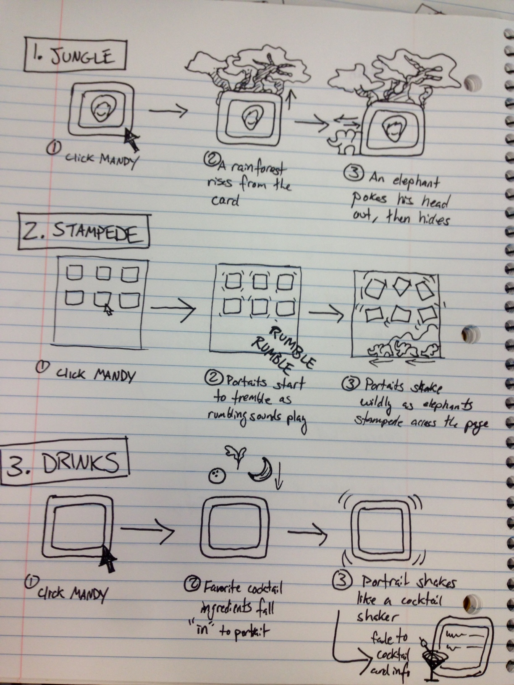

I'm interested in figuring out my ideal project structure for static sites, so this journal is going to be incredibly basic for now.
My requirements are:
See the Pen [DGMD S-15] people page card by Margaret (@margonaut) on CodePen.
See the Pen Elephant Stampede by Margaret (@margonaut) on CodePen.
My parter for this project is Mandy - below are my mockups for her person card.
Mandy gave me a choice between the two elephant related ideas. I decided to go with #2, Stampede. I'd like to work on CSS animations and this seemed like a straightforward way to tackle basic movements.
One of my favorite data visualizations is "A Day in the Life of Americans" by Nathan Yau.
I admire how it combines descriptive text and simple animation to add value and understanding.